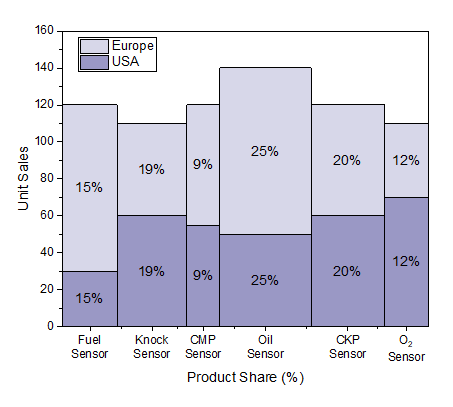
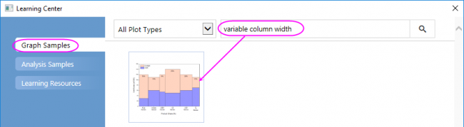
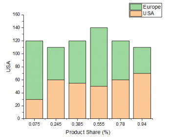
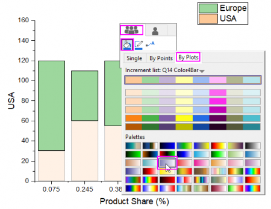
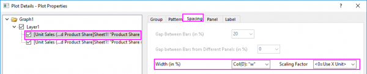
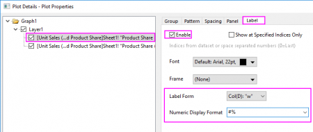
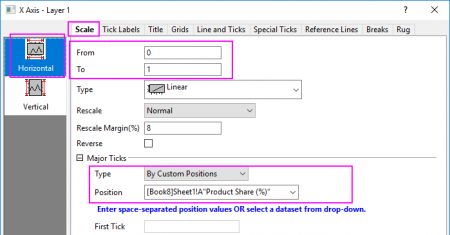
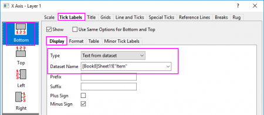
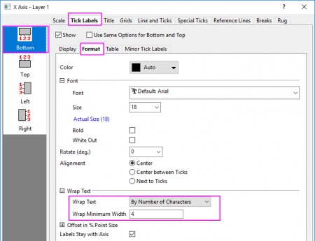
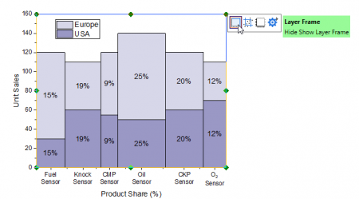

Variable Spaltenbreite
VariableColumnWidth
Zusammenfassung
Mit Origin können Sie einen Datensatz festlegen, mit dem die Säulen-/Balkenbreite gesteuert wird. Wenn der Skalierungsfaktor 0 ist, bestimmen die Datensatzwerte die Balkenbreite hinsichtlich der Skalierungswerte der X-Achse. 
Origin-Version mind. erforderlich: Origin 2020
Was Sie lernen werden
Dieses Kapitel zeigt Ihnen, wie Sie:
- ein gestapeltes Säulendiagramm zeichnen.
- die Breite der Spalte mit einer Variable festlegen und Beschriftungen für die Spalten hinzufügen.
- die Achsenhilfsstriche und Hilfsstrichsbeschriftungen benutzerdefiniert anpassen.
Schritte
Dieses Tutorial ist mit dem Diagrammbeispiel Säulen- und Balkendiagramme - Variable Column Width verbunden.
- Wählen Sie im Menü Hilfe: Lernzentrum, um den Dialog Lernzentrum zu öffnen. Wählen Sie die Registerkarte Diagrammbeispiel im linken Bedienfeld des Lernzentrums und geben Sie dann die Stichwörter "variable column width" ein, um nach dem Beispiel zu suchen. Sie erhalten die folgende Liste mit Beispielen:
- 
- Klicken Sie doppelt auf das Symbol des Diagramms, um dieses Beispiel zu öffnen. Aktivieren Sie im geöffneten Projektordner die Arbeitsmappe Unit Sales (x1000) and Product Share, markieren Sie die Spalten col(B) und col(C) und wählen Sie Zeichnen > Einfache 2D: Gestapelte Säulen im Menü, um ein gestapeltes Säulendiagramm zu zeichnen.
- 
- Klicken Sie auf die Zeichnung und verwenden Sie in der Minisymbolleiste auf der Registerkarte Gruppe die Schaltfläche Füllfarbe
 , um die Füllfarbe der Säulen nach Zeichnung mit der festgelegten Palette Lit LT Purple zu ändern. Natürlich können Sie stattdessen auch eine andere Palette auswählen.
, um die Füllfarbe der Säulen nach Zeichnung mit der festgelegten Palette Lit LT Purple zu ändern. Natürlich können Sie stattdessen auch eine andere Palette auswählen.
- 
- Klicken Sie zum Öffnen des Dialogs Details Zeichnung doppelt auf das Diagramm. Wechseln Sie zur Registerkarte Abstände, wählen Sie Col(D): "w" als Breite (in %) und setzen Sie den Skalierungsfaktor auf <0=X-Einheit verwenden> .
- 
- Gehen Sie zur Registerkarte Beschriftung, aktivieren Sie das Kontrollkästchen Aktivieren, setzen Sie Beschriftungsformat auf Col(D): "w" und das Numerische Format auf #%.
- 
- Klicken Sie auf OK, um den Dialog zu schließen.
- Klicken Sie doppelt auf die X-Achse, um den Dialog Achsen zu öffnen.
- Wählen Sie das Symbol Horizontal auf der Registerkarte Skalierung und setzen Sie die Werte für Von und Bis auf 0 bzw. 1; wählen Sie im Zweig Große Hilfsstriche die Option Nach benutzerdefinierten Positionen für Typ und [Book8]Sheet1!A"Product Share (%)" für Position.
- 
- Gehen Sie zur Registerkarte Beschriftung der Hilfsstriche und wählen Sie auf der Unterregisterkarte Anzeige unter Typ die Option Datensatz mit indizierten Hilfsstrichen und unter Datensatzname [Book8]Sheet1!E"Item".
- 
- Setzen Sie auf der Unterregisterkarte Format für Textumbruch die Option Nach Anzahl der Zeichnen und für Minimale Umbruchsbreite 3.
- 
- Klicken Sie auf OK, um den Dialog zu schließen.
- Klicken Sie doppelt auf den Titel der Y-Achse und ändern Sie ihn in Unit Sales. Klicken Sie auf die weiße Fläche des Layers und in der Minisymbolleiste auf die Schaltfläche Layerrahmen
 , um den Layerrahmen hinzuzufügen.
, um den Layerrahmen hinzuzufügen.
- 
- Klicken Sie mit der rechten Maustaste auf die Legendenbox und wählen Sie Einstellungen im Kontextmenü. Bearbeiten Sie die Legende, um sie in einer Zeile anzuzeigen. Das Diagramm sollte folgendermaßen aussehen: